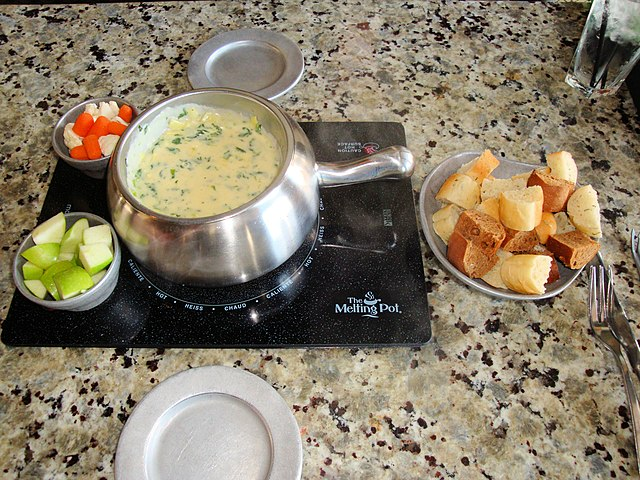

Cheese Fondue Recipe

How to make stove top mac and cheese
Fondue is a classic Swiss dish that's perfect for entertaining. This indulgent
and creamy cheese fondue is made with melted cheese, white wine, lemon
juice, and a touch of garlic, making it the ultimate dip for bread, vegetables,
and fruit. Whether you're hosting a dinner party or just looking for a cozy
night in, this cheese fondue recipe is sure to impress. With its rich and creamy
texture, it's a delicious and comforting dish that everyone will love. Get ready
to dip, swirl, and savor every bite!
Ingredients:
- 1 clove garlic
- 1 lb grated cheese (such as cheddar, Swiss, or a combination)
- 1 cup white wine
- 2 tablespoons cornstarch
- 2 tablespoons lemon juice
- Salt and pepper to taste
- Bread, vegetables, or fruit for dipping
Steps:
- Heat a non-stick pan over medium heat.
- Spread one side of each slice of bread with butter.
- Place one slice of bread, buttered side down, in the pan.
- Put the cheese slices on top of the bread slice in the pan.
- Put the other slice of bread on top, buttered side facing up.
- Cook until the bottom slice of bread is golden brown, about 2-3 minutes.
- Flip the sandwich over with a spatula and cook until the other side is golden brown and the cheese is melted, about 2-3 minutes.
- Serve hot and enjoy!